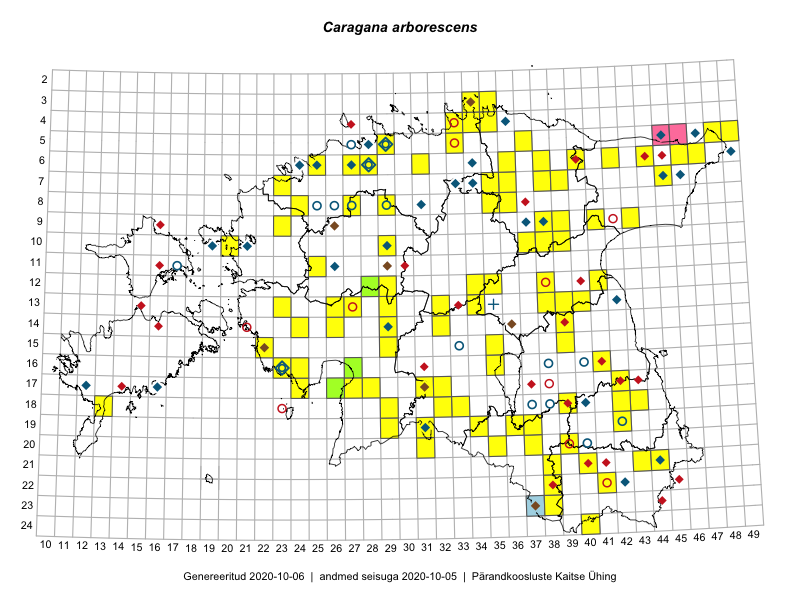

Caragana arborescens — suur läätspuu
Fabaceae :: Caragana arborescens Lam. (246)

Kaart põhineb 257 kirjel:
vaatlusi 210
herbaareksemplare 36
PKÜ kirjeid1 8
ELFi kirjeid2 3
Taime kaasaegsed ja ajaloolised leiukohad asuvad 140 ruudus.
Tingmärgid ja ruutude arvud periooditi (U3 / V4 )
█ 2006–2020 (108/–)
◆/◇ 1971–2005 (35/54)
○ 1921–1970 (16/16)
+ kuni 1920 (1/0)
× hävinud (–/0)
? kaheldav (–/0)
| Ruut | Leidja(d) | Leiuaeg | Kirje |
|---|---|---|---|
| 05-48 | Vello Keppart | 2018-07-08 | ruut/ala: Caragana arborescens Lam. |
| 05-47 | botaaniline ekspeditsioon ZBI | 1982-07-10 | ruut/ala: Caragana arborescens Lam. |
| 06-49 | Vilma Kuusk | 1973-08 | ruut/ala: Caragana arborescens Lam. |
| 07-45 | 1972-07 | ruut/ala: Caragana arborescens Lam. | |
| 07-33 | botaaniline ekspeditsioon ZBI | 1976-07 | ruut/ala: Caragana arborescens Lam. |
| 07-34 | Ülle Kukk | 1999-06-20–1999-06-21 | ruut/ala: Caragana arborescens Lam. |
| 13-42 | Tõnu Ploompuu | 1998-08-01–1998-08-05 | ruut/ala: Caragana arborescens Lam. |
| 06-24 | Toomas Kukk, Marek Sammul | 1998-06-03 | ruut/ala: Caragana arborescens Lam. |
| 06-25 | M. Kask, L. Viljasoo | 1978-09 | ruut/ala: Caragana arborescens Lam. |
| 06-34 | T. Ploompuu | 1998 | ruut/ala: Caragana arborescens Lam. |
| 08-31 | botaaniline ekspeditsioon ZBI | 1987-06-27 | ruut/ala: Caragana arborescens Lam. |
| 22-42 | M. Leht | 1995 | ruut/ala: Caragana arborescens Lam. |
| 09-37 | M. Reitalu | 1999-09-15–1999-09-16 | ruut/ala: Caragana arborescens Lam. |
| 10-21 | T. Kukk | 1994-05-21 | ruut/ala: Caragana arborescens Lam. |
| 11-26 | botaaniline ekspeditsioon ZBI | 1979-06 | ruut/ala: Caragana arborescens Lam. |
| 18-40 | Malle Leht | 1998 | ruut/ala: Caragana arborescens Lam. |
| 14-29 | L. Laasimer, N. Ingerpuu, H. Krall, Illi Tarmu | 1985-06-26–1985-06-28 | ruut/ala: Caragana arborescens Lam. |
| 16-23 | M. Kask, M. Leht, L. Viljasoo | 1979-08 | ruut/ala: Caragana arborescens Lam. |
| 17-16 | Toomas Kukk, Marek Sammul | 1998-07-24 | ruut/ala: Caragana arborescens Lam. |
| 17-12 | M. Reitalu | 1971 | ruut/ala: Caragana arborescens Lam. |
| 19-31 | botaaniline ekspeditsioon ZBI | 1983-06-14 | ruut/ala: Caragana arborescens Lam. |
| 05-45 | Linda Viljasoo, V. Meriste | 1972-08 | ruut/ala: Caragana arborescens Lam. |
| 10-19 | Toomas Kukk, Elle Roosaluste, Mare Leis | 1993-07-06–1998-09-21 | ruut/ala: Caragana arborescens Lam. |
| 19-29 | Peedu Saar, Liina Oja | 2015-05-22 | ruut/ala: Caragana arborescens Lam. |
| 19-29 | Peedu Saar, Liina Oja | 2015-05-22 | ruut/ala: Caragana arborescens Lam. |
| 16-23 | Peedu Saar, Liina Oja | 2015-05-15 | ruut/ala: Caragana arborescens Lam. |
| 16-23 | Peedu Saar, Liina Oja | 2015-05-21 | ruut/ala: Caragana arborescens Lam. |
| 13-26 | Toomas Kukk, Thea Kull, Timo Luhamäe, Ott Luuk, Peedu Saar | 2015-06-28 | ruut/ala: Caragana arborescens Lam. |
| 13-26 | Toomas Kukk, Thea Kull, Timo Luhamäe, Ott Luuk, Peedu Saar | 2015-06-28 | ruut/ala: Caragana arborescens Lam. |
| 13-27 | Toomas Kukk, Indrek Tammekänd | 2015-05-09 | ruut/ala: Caragana arborescens Lam. |
| 13-27 | Toomas Kukk, Indrek Tammekänd | 2015-05-09 | ruut/ala: Caragana arborescens Lam. |
| 12-29 | Tiit Hallikma, Indrek Tammekänd, Toomas Kukk | 2015-06-09 | ruut/ala: Caragana arborescens Lam. |
| 12-29 | Tiit Hallikma, Indrek Tammekänd, Toomas Kukk | 2015-06-09 | ruut/ala: Caragana arborescens Lam. |
| 06-42 | Peedu Saar, S. Laherand | 2015-05-30 | ruut/ala: Caragana arborescens Lam. |
| 12-34 | Toomas Kukk, Indrek Tammekänd | 2015-05-10 | ruut/ala: Caragana arborescens Lam. |
| 13-34 | Toomas Kukk, Indrek Tammekänd | 2015-05-10 | ruut/ala: Caragana arborescens Lam. |
| 12-34 | Toomas Kukk, Indrek Tammekänd | 2015-05-10 | ruut/ala: Caragana arborescens Lam. |
| 13-34 | Toomas Kukk, Indrek Tammekänd | 2015-05-10 | ruut/ala: Caragana arborescens Lam. |
| 09-41 | Toomas Kukk, Raivo Kalle | 2015-05-14 | ruut/ala: Caragana arborescens Lam. |
| 09-41 | Toomas Kukk, Raivo Kalle | 2015-05-14 | ruut/ala: Caragana arborescens Lam. |
| 17-27 | Peedu Saar, Liina Oja | 2015-06-09 | ruut/ala: Caragana arborescens Lam. |
| 17-28 | Peedu Saar, Liina Oja | 2015-06-09 | ruut/ala: Caragana arborescens Lam. |
| 15-39 | Peedu Saar | 2015-07-15 | ruut/ala: Caragana arborescens Lam. |
| 16-41 | Peedu Saar, Eerik Leibak | 2015-07-30 | ruut/ala: Caragana arborescens Lam. |
| 09-38 | Toomas Kukk, Raivo Kalle | 2015-05-11 | ruut/ala: Caragana arborescens Lam. |
| 15-39 | Peedu Saar | 2015-07-15 | ruut/ala: Caragana arborescens Lam. |
| 09-38 | Toomas Kukk, Raivo Kalle | 2015-05-11 | ruut/ala: Caragana arborescens Lam. |
| 05-49 | Tiit Hallikma, Toomas Kukk | 2015-07-22 | ruut/ala: Caragana arborescens Lam. |
| 05-49 | Tiit Hallikma, Toomas Kukk | 2015-07-22 | ruut/ala: Caragana arborescens Lam. |
| 16-41 | Peedu Saar, Eerik Leibak | 2015-07-30 | ruut/ala: Caragana arborescens Lam. |
| 05-48 | Toomas Kukk, Eerik Leibak | 2015-04-26 | ruut/ala: Caragana arborescens Lam. |
| 05-48 | Toomas Kukk, Eerik Leibak | 2015-04-26 | ruut/ala: Caragana arborescens Lam. |
| 17-27 | Peedu Saar, Liina Oja | 2015-06-09 | ruut/ala: Caragana arborescens Lam. |
| 17-28 | Peedu Saar, Liina Oja | 2015-06-09 | ruut/ala: Caragana arborescens Lam. |
| 06-42 | Peedu Saar, Sander Laherand | 2015-05-30 | ruut/ala: Caragana arborescens Lam. |
| 20-39 | Malle Leht, Raivo Leht | 2015-07-28 | ruut/ala: Caragana arborescens Lam. |
| 12-35 | Toomas Kukk, Tiit Hallikma | 2015-06-12 | ruut/ala: Caragana arborescens Lam. |
| 07-45 | Toomas Kukk, Tiit Hallikma | 2015-06-01 | ruut/ala: Caragana arborescens Lam. |
| 13-40 | Peedu Saar | 2015-08-10 | ruut/ala: Caragana arborescens Lam. |
| 13-40 | Peedu Saar | 2015-08-10 | ruut/ala: Caragana arborescens Lam. |
| 10-29 | Tiit Hallikma, Toomas Kukk | 2015-06-11 | ruut/ala: Caragana arborescens Lam. |
| 12-35 | Tiit Hallikma, Toomas Kukk | 2015-06-12 | ruut/ala: Caragana arborescens Lam. |
| 03-34 | Rein Kalamees, Kersti Püssa | 2015-06-02 | ruut/ala: Caragana arborescens Lam. |
| 04-34 | Rein Kalamees, Kersti Püssa | 2015-06-02 | ruut/ala: Caragana arborescens Lam. |
| 07-45 | Tiit Hallikma, Toomas Kukk | 2015-06-01 | ruut/ala: Caragana arborescens Lam. |
| 05-37 | Rein Kalamees, Kersti Püssa | 2015-08-15 | ruut/ala: Caragana arborescens Lam. |
| 07-45 | Ott Luuk, Hannes Pehlak | 2015-07-22 | ruut/ala: Caragana arborescens Lam. |
| 14-29 | Ott Luuk, Hannes Pehlak | 2015-06-10 | ruut/ala: Caragana arborescens Lam. |
| 19-31 | Ott Luuk, Indrek Tammekänd | 2015-05-22 | ruut/ala: Caragana arborescens Lam. |
| 08-35 | Jana-Maria Habicht, Ester Valdvee, Kirke Pilvik | 2015-07-14–2015-07-26 | ruut/ala: Caragana arborescens Lam. |
| 14-24 | Indrek Tammekänd | 2015-05-23 | ruut/ala: Caragana arborescens Lam. |
| 13-40 | Eeva-Maria Jeletsky, Tarmo Niitla | 2015-04-26 | ruut/ala: Caragana arborescens Lam. |
| 13-40 | Eeva-Maria Jeletsky, Tarmo Niitla | 2015-04-26 | ruut/ala: Caragana arborescens Lam. |
| 17-24 | Ott Luuk, Eerik Leibak | 2015-05-21 | ruut/ala: Caragana arborescens Lam. |
| 15-22 | Vilma Kuusk, Indrek Tammekänd | 2015-06-30 | ruut/ala: Caragana arborescens Lam. |
| 14-39 | Eeva-Maria Jeletsky, Tarmo Niitla | 2015-05-03 | ruut/ala: Caragana arborescens Lam. |
| 14-39 | Eeva-Maria Jeletsky, Tarmo Niitla | 2015-05-03 | ruut/ala: Caragana arborescens Lam. |
| 17-24 | Ott Luuk, Eerik Leibak | 2015-05-21 | ruut/ala: Caragana arborescens Lam. |
| 23-38 | Eeva-Maria Jeletsky, Tarmo Niitla | 2015-07-15 | ruut/ala: Caragana arborescens Lam. |
| 23-38 | Eeva-Maria Jeletsky, Tarmo Niitla | 2015-07-15 | ruut/ala: Caragana arborescens Lam. |
| 18-43 | Maret Gerz, Jaak-Albert Metsoja | 2015-05-20 | ruut/ala: Caragana arborescens Lam. |
| 16-24 | Maret Gerz, Leena Gerz | 2015-08-09 | ruut/ala: Caragana arborescens Lam. |
| 16-24 | Maret Gerz, Leena Gerz | 2015-08-09 | ruut/ala: Caragana arborescens Lam. |
| 08-35 | Jana-Maria Habicht, Ester Valdvee | 2015-07-15 | ruut/ala: Caragana arborescens Lam. |
| 19-37 | Eeva-Maria Jeletsky, Tarmo Niitla | 2015-08-10 | ruut/ala: Caragana arborescens Lam. |
| 20-37 | Eeva-Maria Jeletsky, Tarmo Niitla | 2015-08-11 | ruut/ala: Caragana arborescens Lam. |
| 19-37 | Eeva-Maria Jeletsky, Tarmo Niitla | 2015-08-10 | ruut/ala: Caragana arborescens Lam. |
| 20-37 | Eeva-Maria Jeletsky, Tarmo Niitla | 2015-08-11 | ruut/ala: Caragana arborescens Lam. |
| 18-33 | Maria Abakumova, Helle Mäemets | 2015-05-25 | ruut/ala: Caragana arborescens Lam. |
| 18-32 | Maria Abakumova, Helle Mäemets | 2015-05-25 | ruut/ala: Caragana arborescens Lam. |
| 13-23 | Kirsi Loide, Marje Loide | 2015-08-18–2015-08-20 | ruut/ala: Caragana arborescens Lam. |
| 14-29 | Liina Oja, Ott Luuk | 2015-05-10 | ruut/ala: Caragana arborescens Lam. |
| 17-42 | Kirsi Loide, Marje Loide | 2015-07-27–2015-07-28 | ruut/ala: Caragana arborescens Lam. |
| 18-42 | Kirsi Loide, Marje Loide | 2015-07-28 | ruut/ala: Caragana arborescens Lam. |
| 19-42 | Kirsi Loide, Marje Loide | 2015-07-29–2015-07-30 | ruut/ala: Caragana arborescens Lam. |
| 18-32 | Maria Abakumova, Helle Mäemets | 2015-05-25 | ruut/ala: Caragana arborescens Lam. |
| 18-33 | Maria Abakumova, Helle Mäemets | 2015-05-25 | ruut/ala: Caragana arborescens Lam. |
| 06-44 | Timo Luhamäe, Eerik Leibak | 2015-05-30 | ruut/ala: Caragana arborescens Lam. |
| 06-47 | Timo Luhamäe, Eerik Leibak | 2015-06-01 | ruut/ala: Caragana arborescens Lam. |
| 09-39 | Elle Rajandu | 2015-08-14 | ruut/ala: Caragana arborescens Lam. |
| 10-37 | Karin Kikas, Elle Rajandu | 2015-06-01–2015-07-13 | ruut/ala: Caragana arborescens Lam. |
| 10-37 | Elle Rajandu | 2015-07-13 | ruut/ala: Caragana arborescens Lam. |
| 06-40 | Mari Metsoja, Jaak-Albert Metsoja | 2015-07-24 | ruut/ala: Caragana arborescens Lam. |
| 06-42 | Mari Metsoja, Jaak-Albert Metsoja | 2015-07-21 | ruut/ala: Caragana arborescens Lam. |
| 07-23 | Mari Metsoja, Jaak-Albert Metsoja | 2015-05-16 | ruut/ala: Caragana arborescens Lam. |
| 06-42 | Eerik Leibak, Jaanus Paal, Uudo Timm | 2015-07-08 | ruut/ala: Caragana arborescens Lam. |
| 06-42 | Eerik Leibak, Jaanus Paal, Uudo Timm | 2015-07-08 | ruut/ala: Caragana arborescens Lam. |
| 06-44 | Timo Luhamäe, Eerik Leibak | 2015-05-30 | ruut/ala: Caragana arborescens Lam. |
| 06-47 | Timo Luhamäe, Eerik Leibak | 2015-06-01 | ruut/ala: Caragana arborescens Lam. |
| 17-26 | Meeli Mesipuu | 2015-05-21 | ruut/ala: Caragana arborescens Lam. |
| 06-38 | Kaili Orav, Silvia Pihu | 2015-07-20 | ruut/ala: Caragana arborescens Lam. |
| 19-31 | Ott Luuk, Indrek Tammekänd | 2015-05-22 | ruut/ala: Caragana arborescens Lam. |
| 20-31 | Ott Luuk, Indrek Tammekänd | 2015-05-22 | ruut/ala: Caragana arborescens Lam. |
| 12-35 | Ott Luuk, Liina Oja | 2015-05-11 | ruut/ala: Caragana arborescens Lam. |
| 06-38 | Kaili Orav, Silvia Pihu | 2015-07-20 | ruut/ala: Caragana arborescens Lam. |
| 21-40 | Kaili Kattai | 2015-05-31 | ruut/ala: Caragana arborescens Lam. |
| 05-29 | Peedu Saar, Sander Laherand | 2013-07-07 | ruut/ala: Caragana arborescens Lam. |
| 10-20 | Tõnu Ploompuu | 2015-05-02 | ruut/ala: Caragana arborescens Lam. |
| 13-39 | Kai Rünk, Ülle Jõgar, Illi Tarmu | 2016-06-08–2016-06-08T11:00Z | ruut/ala: Caragana arborescens Lam. |
| 13-39 | Kai Rünk, Ülle Jõgar, Illi Tarmu | 2016-06-08–2016-06-08T06:10Z | ruut/ala: Caragana arborescens Lam. |
| 16-27 | Indrek Tammekänd | 2016-06-01 | ruut/ala: Caragana arborescens Lam. |
| 21-44 | Toomas Kukk, Tiit Hallikma, Johannes Kõdar | 2016-06-14 | ruut/ala: Caragana arborescens Lam. |
| 22-41 | Toomas Kukk, Tiit Hallikma | 2016-06-16 | ruut/ala: Caragana arborescens Lam. |
| 22-38 | Rein Kalamees, Eerik Leibak | 2016-06-16 | ruut/ala: Caragana arborescens Lam. |
| 22-38 | Rein Kalamees, Eerik Leibak | 2016-06-16 | ruut/ala: Caragana arborescens Lam. |
| 19-34 | Silvia Pihu, Illi Tarmu | 2015-07-11 | ruut/ala: Caragana arborescens Lam. |
| 19-36 | Peedu Saar, Tarmo Niitla | 2016-06-14 | ruut/ala: Caragana arborescens Lam. |
| 24-40 | Sander Laherand, Ott Luuk, Susanna Vain | 2016-06-14 | ruut/ala: Caragana arborescens Lam. |
| 06-28 | Toomas Kukk | 2016-07-04 | ruut/ala: Caragana arborescens Lam. |
| 06-28 | Toomas Kukk | 2016-07-04 | ruut/ala: Caragana arborescens Lam. |
| 14-26 | Liina Oja, Maret Gerz | 2016-07-08 | ruut/ala: Caragana arborescens Lam. |
| 20-35 | Thea Kull, Eerik Leibak | 2016-07-18 | ruut/ala: Caragana arborescens Lam. |
| 13-38 | Eeva-Maria Jeletsky, Tarmo Niitla | 2016-07-23 | ruut/ala: Caragana arborescens Lam. |
| 13-38 | Eeva-Maria Jeletsky, Tarmo Niitla | 2016-07-23 | ruut/ala: Caragana arborescens Lam. |
| 20-35 | Thea Kull, Eerik Leibak | 2016-07-18 | ruut/ala: Caragana arborescens Lam. |
| 17-32 | Toomas Kukk, Eerik Leibak | 2016-07-20 | ruut/ala: Caragana arborescens Lam. |
| 17-32 | Toomas Kukk, Eerik Leibak | 2016-07-20 | ruut/ala: Caragana arborescens Lam. |
| 17-32 | Toomas Kukk, Eerik Leibak | 2016-07-20 | ruut/ala: Caragana arborescens Lam. |
| 14-32 | Toomas Kukk, Liina Oja | 2016-07-21 | ruut/ala: Caragana arborescens Lam. |
| 07-38 | Liina Oja, Eerik Leibak | 2016-07-28 | ruut/ala: Caragana arborescens Lam. |
| 07-35 | Sander Laherand, Toomas Kukk, Nele Jõessar | 2016-07-27 | ruut/ala: Caragana arborescens Lam. |
| 06-25 | Sander Laherand, Nele Jõessar | 2016-08-01 | ruut/ala: Caragana arborescens Lam. |
| 21-43 | Thea Kull, Peedu Saar | 2016-08-05 | ruut/ala: Caragana arborescens Lam. |
| 10-39 | Ott Luuk, Eerik Leibak | 2016-08-03 | ruut/ala: Caragana arborescens Lam. |
| 10-39 | Ott Luuk, Eerik Leibak | 2016-08-03 | ruut/ala: Caragana arborescens Lam. |
| 13-32 | Thea Kull, Raivo Kalle, Susanna Vain | 2016-07-21 | ruut/ala: Caragana arborescens Lam. |
| 19-36 | Tarmo Niitla, Peedu Saar | 2016-06-14 | ruut/ala: Caragana arborescens Lam. |
| 13-32 | Susanna Vain, Thea Kull, Raivo Kalle | 2016-07-21 | ruut/ala: Caragana arborescens Lam. |
| 08-29 | Sander Laherand, Rein Kalamees | 2016-07-08 | ruut/ala: Caragana arborescens Lam. |
| 07-39 | Liina Oja, Meeli Mesipuu | 2016-07-29 | ruut/ala: Caragana arborescens Lam. |
| 07-38 | Liina Oja, Eerik Leibak | 2016-07-28 | ruut/ala: Caragana arborescens Lam. |
| 21-43 | Peedu Saar, Thea Kull | 2016-08-05 | ruut/ala: Caragana arborescens Lam. |
| 06-36 | Liina Oja, Peedu Saar, Susanna Vain | 2016-07-27 | ruut/ala: Caragana arborescens Lam. |
| 04-35 | Sander Laherand, Ott Luuk, Nele Jõessar | 2016-07-26 | ruut/ala: Caragana arborescens Lam. |
| 03-35 | Sander Laherand, Ott Luuk, Nele Jõessar | 2016-07-26 | ruut/ala: Caragana arborescens Lam. |
| 08-36 | Karin Kikas, Elle Rajandu | 2016-06-27 | ruut/ala: Caragana arborescens Lam. |
| 08-36 | Karin Kikas, Elle Rajandu | 2016-06-27 | ruut/ala: Caragana arborescens Lam. |
| 15-35 | Liina Oja, Elle Rajandu, Susanna Vain | 2016-07-22 | ruut/ala: Caragana arborescens Lam. |
| 14-32 | Liina Oja, Toomas Kukk | 2016-07-21 | ruut/ala: Caragana arborescens Lam. |
| 07-35 | Toomas Kukk, Sander Laherand, Nele Jõessar | 2016-07-27 | ruut/ala: Caragana arborescens Lam. |
| 19-36 | Sander Laherand | 2016-09-20 | ruut/ala: Caragana arborescens Lam. |
| 19-31 | Meeli Mesipuu, Mari Metsoja | 2016-07-19 | ruut/ala: Caragana arborescens Lam. |
| 21-44 | Tiit Hallikma, Toomas Kukk, Johannes Kõdar | 2016-06-14 | ruut/ala: Caragana arborescens Lam. |
| 22-41 | Tiit Hallikma, Toomas Kukk, Johannes Kõdar | 2016-06-16 | ruut/ala: Caragana arborescens Lam. |
| 12-38 | Ulvi Selgis | 2016-09-18 | ruut/ala: Caragana arborescens Lam. |
| 05-33 | Ott Luuk, Hannes Pehlak | 2016-07-27 | ruut/ala: Caragana arborescens Lam. |
| 07-39 | Meeli Mesipuu, Liina Oja | 2016-07-29 | ruut/ala: Caragana arborescens Lam. |
| 06-46 | Kadi-Liis Kesler, Tiina Elvisto | 2015-07-30 | ruut/ala: Caragana arborescens Lam. |
| 19-31 | Meeli Mesipuu, Mari Metsoja | 2016-07-19 | ruut/ala: Caragana arborescens Lam. |
| 24-40 | Ott Luuk, Sander Laherand, Susanna Vain | 2016-06-14 | ruut/ala: Caragana arborescens Lam. |
| 03-35 | Ott Luuk, Sander Laherand, Nele Jõessar | 2016-07-26 | ruut/ala: Caragana arborescens Lam. |
| 21-38 | Jaak-Albert Metsoja, Mari Metsoja | 2016-06-17 | ruut/ala: Caragana arborescens Lam. |
| 08-24 | Jaak-Albert Metsoja, Mari Metsoja | 2016-07-08 | ruut/ala: Caragana arborescens Lam. |
| 09-23 | Jaak-Albert Metsoja, Mari Metsoja | 2016-07-06 | ruut/ala: Caragana arborescens Lam. |
| 09-43 | Hannes Pehlak, Ott Luuk | 2016-07-29 | ruut/ala: Caragana arborescens Lam. |
| 09-23 | Jaak-Albert Metsoja, Mari Metsoja | 2016-07-06 | ruut/ala: Caragana arborescens Lam. |
| 08-24 | Jaak-Albert Metsoja, Mari Metsoja | 2016-07-08 | ruut/ala: Caragana arborescens Lam. |
| 16-35 | Jaak-Albert Metsoja, Lena Neuenkamp, Sirje Azarov | 2016-07-18 | ruut/ala: Caragana arborescens Lam. |
| 16-35 | Jaak-Albert Metsoja, Lena Neuenkamp, Sirje Azarov | 2016-07-20 | ruut/ala: Caragana arborescens Lam. |
| 19-31 | Mari Metsoja, Meeli Mesipuu | 2016-07-19 | ruut/ala: Caragana arborescens Lam. |
| 08-29 | Rein Kalamees, Sander Laherand | 2016-07-08 | ruut/ala: Caragana arborescens Lam. |
| 09-43 | Rein Kalamees, Kersti Püssa | 2016-06-28 | ruut/ala: Caragana arborescens Lam. |
| 10-38 | Ott Luuk, Eerik Leibak | 2016-08-08 | ruut/ala: Caragana arborescens Lam. |
| 10-38 | Ott Luuk, Eerik Leibak | 2016-08-08 | ruut/ala: Caragana arborescens Lam. |
| 18-13 | Mari Reitalu | 2008-05-21 | ruut/ala: Caragana arborescens Lam. |
| 16-27 | Indrek Tammekänd | 2015-06-25 | ruut/ala: Caragana arborescens Lam. |
| 06-46 | Kadi-Liis Kesler, Tiina Elvisto | 2015-07-30 | ruut/ala: Caragana arborescens Lam. |
| 17-27 | Indrek Tammekänd | 2016-07-12 | ruut/ala: Caragana arborescens Lam. |
| 08-27 | Mari Reitalu, Eerik Leibak | 2017-08-08 | ruut/ala: Caragana arborescens Lam. |
| 08-27 | Mari Reitalu, Eerik Leibak | 2017-08-08 | ruut/ala: Caragana arborescens Lam. |
| 11-25 | Toomas Kukk, Eerik Leibak | 2017-08-10 | ruut/ala: Caragana arborescens Lam. |
| 11-25 | Eerik Leibak, Toomas Kukk | 2017-08-10 | ruut/ala: Caragana arborescens Lam. |
| 16-23 | Indrek Tammekänd, Eike Vunk | 2017-07-20 | ruut/ala: Caragana arborescens Lam. |
| 17-28 | Indrek Tammekänd | 2015-06-20–2015-08-24 | ruut/ala: Caragana arborescens Lam. |
| 18-29 | Indrek Tammekänd | 2017-07-05 | ruut/ala: Caragana arborescens Lam. |
| 17-31 | Ott Luuk, Toomas Kukk, Sten Mander, Kersti Tambets, Timo Luhamäe | 2017-08-29 | ruut/ala: Caragana arborescens Lam. |
| 14-39 | Peedu Saar | 2017-07-26 | ruut/ala: Caragana arborescens Lam. |
| 14-39 | Peedu Saar | 2017-07-26 | ruut/ala: Caragana arborescens Lam. |
| 06-31 | Peedu Saar, Ott Luuk | 2017-07-21 | ruut/ala: Caragana arborescens Lam. |
| 06-31 | Peedu Saar, Ott Luuk | 2017-07-21 | ruut/ala: Caragana arborescens Lam. |
| 15-29 | Tiit Hallikma, Elle Rajandu | 2016-07-21 | ruut/ala: Caragana arborescens Lam. |
| 21-44 | Toomas Kukk | 2018-06-24 | ruut/ala: Caragana arborescens Lam. |
| 06-27 | Mari Reitalu | 2019-05-30 | ruut/ala: Caragana arborescens Lam. |
| 06-28 | Toomas Kukk | 2019-07-29 | ruut/ala: Caragana arborescens Lam. |
| 13-29 | Mari Reitalu, Thea Kull | 2019-08-28 | ruut/ala: Caragana arborescens Lam. |
| 06-46 | Toomas Kukk, Thea Kull | 2019-09-11 | ruut/ala: Caragana arborescens Lam. |
| 07-36 | Ott Luuk, Jaak-Albert Metsoja | 2019-08-05 | ruut/ala: Caragana arborescens Lam. |
| 04-33 | Ott Luuk, Jaak-Albert Metsoja | 2019-08-07 | ruut/ala: Caragana arborescens Lam. |
| 18-39 | Mare Toom | 2008 | ruut/ala: Caragana arborescens Lam. |
| 12-41 | Ott Luuk, Sten Mander, Kersti Tambets | 2019-05-28 | ruut/ala: Caragana arborescens Lam. |
| 16-38 | Visolde Puusepp, Helga Tamm | 1962-07-05 | TAA0074909: Caragana arborescens Lam. |
| 19-42 | Agnes Ojaveer, Helga Tamm | 1960-06-07 | TAA0074915: Caragana arborescens Lam. |
| 16-40 | Gustav Vilbaste | 1934-08 | TAA0074918: Caragana arborescens Lam. |
| 16-23 | Agnes Ojaveer, Helga Tamm | 1962-07-27 | TAA0074923: Caragana arborescens Lam. |
| 18-37 | Helga Tamm, Raivo Läst | 1962-06-28 | TAA0074924: Caragana arborescens Lam. |
| 18-38 | Linda Viljasoo | 1962-06-21 | TAA0074928: Caragana arborescens Lam. |
| 18-38 | Silvia Krastin | 1962-06-13 | TAA0074929: Caragana arborescens Lam. |
| 18-38 | Silvia Krastin | 1962-06-13 | TAA0074930: Caragana arborescens Lam. |
| 08-26 | Visolde Puusepp, Alma Saare | 1964-06-21 | TAA0074932: Caragana arborescens Lam. |
| 08-27 | Agnes Ojaveer | 1964-06-08 | TAA0074933: Caragana arborescens Lam. |
| 20-40 | Maret Kask | 1957-06-13 | TAA0074934: Caragana arborescens Lam. |
| 15-33 | Alma Saare, Silvia Talts | 1965-06-24 | TAA0074937: Caragana arborescens Lam. |
| 09-38 | O. Abner, J. Elliku | 2002-06-18 | TALL A001364: Caragana arborescens Lam. |
| 05-29 | J. Elliku | 1974-07-22–1975-06-09 | TALL A001365: Caragana arborescens Lam. |
| 05-29 | A. Paivel | 1961-07-13 | TALL A001366: Caragana arborescens Lam. |
| 06-28 | S. Jans | 1948-06-16 | TAM0052603: Caragana arborescens Lam. |
| 08-29 | E. Peikel | 1949-05-29 | TAM0052604: Caragana arborescens Lam. |
| 08-29 | E. Peikel | 1949-05-29 | TAM0052605: Caragana arborescens Lam. |
| 05-28 | H. Aasamaa | 1989-09-23 | TAM0055432: Caragana arborescens Lam. |
| 11-17 | M. Tsahkna | 1969-07-20 | TU300831: Caragana arborescens Lam. |
| 16-40 | A. Remmel | 1955-07-15 | TU300834: Caragana arborescens Lam. |
| 16-40 | A. Remmel | 1955-07-15 | TU300835: Caragana arborescens Lam. |
| 05-27 | G. Vilbaste | 1947-04-17 | TAM0024926: Caragana arborescens Lam. |
| 08-25 | A. Prii | 1953-05-25 | TAM0024928: Caragana arborescens Lam. |
| 08-25 | A. Prii | 1953-05-25 | TAM0024929: Caragana arborescens Lam. |
| 08-25 | A. Prii | 1953-05-25 | TAM0024930: Caragana arborescens Lam. |
| 21-44 | J.-M. Habicht | 1998-05-26 | TAM0025152: Caragana arborescens Lam. |
| 12-28 | Toomas Kukk, Tiit Hallikma, Indrek Tammekänd | 2015-06-09 | TAA0135011: Caragana arborescens Lam. |
| 17-26 | Meeli Mesipuu | 2015-05-21 | TAA0137493: Caragana arborescens Lam. |
| 05-28 | Heinrich Aasamaa | 1990-06-20 | TAM0136360: Caragana arborescens Lam. |
| 05-28 | Heinrich Aasamaa | 1990-06-20 | TAM0136361: Caragana arborescens Lam. |
| 04-36 | Ain Lankov | 1977-07-20 | TAA0147592: Caragana arborescens Lam. |
| 16-27 | Indrek Tammekänd | 2018-07-12 | TAA0147784: Caragana arborescens Lam. |
| 19-42 | Linda Viljasoo, Viiu Hein | 1960-06-15 | TAA0074913: Caragana arborescens Lam. |
| 06-27 | Toomas Kukk | 1983-05-26 | TAA0074916: Caragana arborescens Lam. |
| 13-35 | J. Treboux | 1859 | TAM0059556: Caragana arborescens Lam. |
| 14-36 | Meelis Suurkask, Piret Pott, Asko Lõhmus | 1993-07-16 | ELF: 5266 |
| 23-37 | Karin Kikas, Martti Rohusaar | 2009-11-10 | ELF: 13727 |
| 22-43 | Kai Koppel | 2010-08-20 | ELF: 19180 |
| 15-22 | 2000-07-19 | PKÜ: 1927 | |
| 09-26 | 2002-08-20 | PKÜ: 9673 | |
| 03-34 | 2005-06-07 | PKÜ: 11853 | |
| 05-45 | 2007-08-23 | PKÜ: 13992 | |
| 17-31 | 2000-07-14 | PKÜ: 6376 | |
| 23-37 | 2002-09-02 | PKÜ: 9915 | |
| 11-29 | 2002-06-06 | PKÜ: 8719 | |
| 05-46 | 2007-08-22 | PKÜ: 13996 |
Pärandkoosluste Kaitse Ühingu (PKÜ) andmebaas sisaldab inventeeritud koosluste kirjeldusi ja liigiloendeid. Kõige enam on andmeid niidutaimede kohta.↩︎
Eestimaa Looduse Fondi (ELF) andmebaas sisaldab inventeeritud koosluste kirjeldusi ja liigiloendeid. Eriti rohkesti on andmeid märgalade kohta.↩︎
Ruutude arv uue atlase andmekogu järgi. Muuhulgas arvestab vanemat herbaariumi, 2005. aasta atlase välitöölehtedelt uuesti digitaliseeritud andmeid jne. Uue atlase andmekogust pärinevad andmed on kaardile kantud siniste sümbolitega.↩︎
Ruutude arv 2005. aasta atlase (Kukk, T., Kull, T., Eesti taimede levikuatlas. Eesti Maaülikool, Põllumajandus- ja Keskkonnainstituut, Tartu, 2005) järgi. Andmeallikana on kasutatud levik.exe programmi, kus igas ruudus on registreeritud vaid uusim leid. Seetõttu on vanemate perioodide kohta andmed puudulikud. Kasutatud levik.exe andmestikus leidub mõningaid kõrvalekaldeid atlase trükis ilmunud versioonist, sagedamini tarnade ja käpaliste seas. Lisaks leidub selles andmestikus valik liike (peamiselt väheste leidudega tulnuktaimed), mille kaarte trükis ei avaldatud. Vana atlase andmed ruutudest, milles ei ole uue atlase andmekogus leide enne 2006. aastat, on kaardil esitatud punaste sümbolitega. Vana atlase andmetel hävinud ja kaheldavaid leiukohti pole hilisemate (taas)leidude põhjal korrigeeritud.↩︎